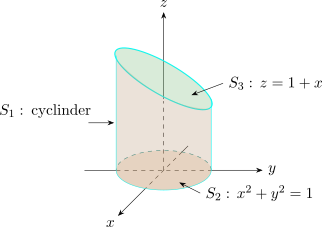

4.10 Surface Integrals
The surface integral is to surface area what the line integral is to arc length. Suppose that a surface \(S\) has a vector equation \(\mathbf r(u,v) = x(u,v)\,\mathbf i + y(u,v)\,\mathbf j + z(u,v)\,\mathbf k\), \((u,v)\in D\). Then the surface integral of \(f\) over \(S\) is \[\iint \limits _S f(x,y,z)\,dS = \iint \limits _D f(\mathbf r(u,v))\,|\mathbf r_u \times \mathbf r_v|\,dA .\] If \(f\) is the density of a thin sheet in the shape of \(S\), in mass per unit area, the surface integral is its mass. With \(f = 1\), \(\iint _S dS = \iint _D|\mathbf r_u \times \mathbf r_v|\,dA = A(S)\).
Solution. With \(\mathbf r(\phi ,\theta ) = \langle \sin \phi \cos \theta , \sin \phi \sin \theta , \cos \phi \rangle \), \(0\leq \phi \leq \pi \), \(0 \leq \theta \leq 2\pi \), we have \(|\mathbf r_\phi \times \mathbf r_\theta | = \sin \phi \), so \begin {align*} \iint \limits _S x^2\,dS & = \int ^{2\pi }_0\int ^{\pi }_0 \sin ^2\phi \cos ^2\theta \, \sin \phi \,d\phi \, d\theta = \int ^{2\pi }_0\cos ^2\theta \,d\theta \int ^{\pi }_0\sin ^3\phi \,d\phi \\ & = \pi \cdot \frac 43 = \frac {4\pi }{3} . \end {align*}
By symmetry the integrals of \(x^2\), \(y^2\) and \(z^2\) are equal, and their sum is \(\iint _S 1\,dS = 4\pi \), which confirms the answer.
If \(S\) is the graph \(z = g(x,y)\) over \(D\), then \[\iint \limits _S f(x,y,z)\,dS = \iint \limits _D f(x,y,g(x,y))\sqrt { \left (\frac {\partial g}{\partial x}\right )^2 + \left (\frac {\partial g}{\partial y}\right )^2 + 1}\, dA .\]
Example 4.10.2. Evaluate \(\iint _S y\,dS\), where \(S\) is the surface \(z = x + y^2\), \(0\leq x\leq 1\), \(0 \leq y \leq 2\).
Solution. Here \(g_x = 1\) and \(g_y = 2y\), so \[\iint \limits _Sy\, dS = \int _0^1\int _0^2 y\sqrt {1 + 1 + 4y^2}\,dy\,dx = \left [\frac {(2 + 4y^2)^{3/2}}{12}\right ]_0^2 = \frac {18^{3/2} - 2^{3/2}}{12} = \frac {13\sqrt {2}}{3} .\]
If \(S\) is piecewise smooth, a finite union of smooth surfaces \(S_1, S_2,\dots , S_n\) that meet only along their boundaries, then \[\iint \limits _{S} f \,dS = \iint \limits _{S_1}f\,dS + \iint \limits _{S_2}f\,dS + \cdots +\iint \limits _{S_n}f\,dS .\]
Example 4.10.3. Evaluate \(\iint _S z\,dS\), where \(S\) is the closed surface whose sides \(S_1\) are given by the cylinder \(x^2 + y^2 =1\), whose bottom \(S_2\) is the disc \(x^2 + y^2 \leq 1\) in the plane \(z =0\), and whose top \(S_3\) is the part of the plane \(z = 1 + x\) that lies above \(S_2\).
Solution.

For \(S_1\), use \(\theta \) and \(z\) as parameters: \(\mathbf r(\theta ,z) = \cos \theta \,\mathbf i + \sin \theta \,\mathbf j + z\,\mathbf k\), with \(0 \leq \theta \leq 2\pi \) and \(0\leq z \leq 1 + x = 1 + \cos \theta \). Then \(\mathbf r_\theta = -\sin \theta \, \mathbf i + \cos \theta \,\mathbf j\) and \(\mathbf r_z = \mathbf k\), so \[\mathbf r_\theta \times \mathbf r_z = \begin {vmatrix} \mathbf i & \mathbf j & \mathbf k\\ -\sin \theta & \cos \theta & 0\\ 0 & 0 & 1 \end {vmatrix} = \cos \theta \,\mathbf i + \sin \theta \,\mathbf j ,\qquad |\mathbf r_\theta \times \mathbf r_z| = 1 ,\] and \[\iint \limits _{S_1}z\,dS = \int ^{2\pi }_0 \int ^{1 + \cos \theta }_0 z\,dz\, d\theta = \int _0^{2\pi }\frac {(1 + \cos \theta )^2}{2}\,d\theta = \frac {1}{2}(2\pi + \pi ) = \frac {3\pi }{2} .\] \(S_2\) lies in the plane \(z = 0\), so \(\iint _{S_2}z\,dS = 0\). On \(S_3\), \(z = g(x,y) = 1 + x\) over the unit disc \(D\), with \(g_x = 1\) and \(g_y = 0\), so \[\iint \limits _{S_3} z\, dS = \iint \limits _D (1+x)\sqrt {2}\,dA = \sqrt 2\int ^{2\pi }_0 \int ^1_0 ( 1 + r\cos \theta )\, r\, dr\, d\theta = \sqrt {2}\,\pi .\] Therefore \[\iint \limits _{S} z \,dS = \frac {3\pi }{2} + 0 + \sqrt {2}\,\pi = \left ( \frac {3}{2}+ \sqrt {2}\right )\pi .\]
Example 4.10.4. A thin hemispherical shell \(x^2 + y^2 + z^2 = a^2\), \(z\geq 0\), has density equal to the height \(z\). Find its mass.
Solution. With \(dS = a^2\sin \phi \,d\phi \,d\theta \) and \(z = a\cos \phi \), \[m = \int _0^{2\pi }\int _0^{\pi /2}a\cos \phi \,a^2\sin \phi \,d\phi \,d\theta = 2\pi a^3\cdot \frac 12 = \pi a^3 .\]
Questions on this section
Stuck on something here? Ask below and it stays attached to this topic.